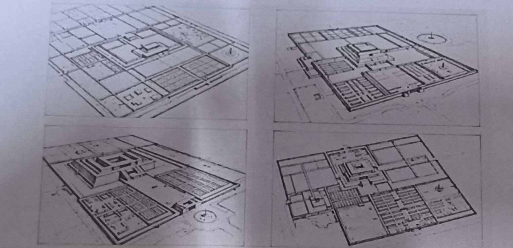

| 序号 | 错误内容 | 改正答案 | 理由（史实依据） |
|---|---|---|---|
| 1 | 指南针→引发欧美资产阶级革命 | 指南针→推动新航路开辟 | 指南针主要应用于航海，资产阶级革命根源是资本主义发展与封建制度矛盾，无关指南针。 |
| 2 | 科举制→直接催生西方民主共和制度 | 科举制→影响西方近代文官制度 | 科举制影响的是考试选官制度；民主共和思想源于启蒙运动和古希腊传统。 |
| 3 | 汉字→演变成为欧洲拉丁字母 | 二者无演变关系，分属不同文字系统 | 汉字为表意文字，拉丁字母为表音文字，分属不同语系。 |
| 4 | 汉服→成为欧洲中世纪主流服饰 | 汉服未成为欧洲主流服饰 | 欧洲中世纪服饰受日耳曼、教会文化影响，汉服仅为少量外传。 |
| 5 | 郑和下西洋→推动欧洲早期殖民扩张 | 郑和下西洋是和平外交，与殖民扩张无关 | 郑和目的是宣扬国威、朝贡贸易；欧洲殖民扩张由新航路开辟引发。 |
— 全卷完 —
返回高三首页